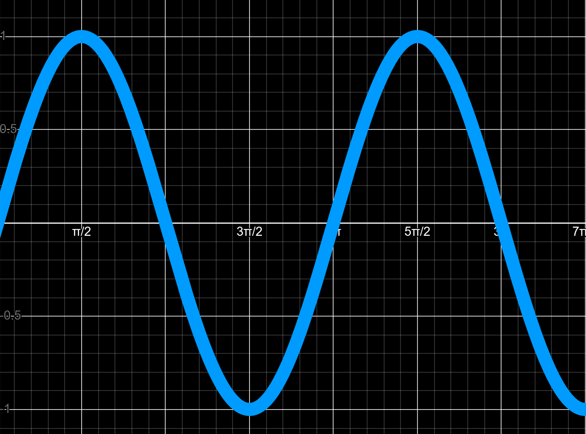

This is a pure tone.
It is technically referred to as a sine wave.
This comes from its shape as the graph of $y = \sin(x)$.

The sine wave has a frequency.
The frequency is in Hz (hertz). It is the number of times the wave repeats per second, and it controls the pitch.
Experiment with the frequency of the sound below. 440 hz is the frequency of note A4. Try frequencies between 100 and 14000.
If you experiment enough, you'll notice that you hear a greater difference in pitch between frequencies when the frequency is low (a few hundred hz).
This is because the frequency scale is logarithmic.
This means that you must multiply the frequency by some number multiple times (raise it to a power) to increase the perceived pitch by a constant amount.
Here, there is a slider for the frequency. How much the frequency changes is now adjusted to be logarithmic so that you hear a similar change in pitch regardless of how high the frequency is.